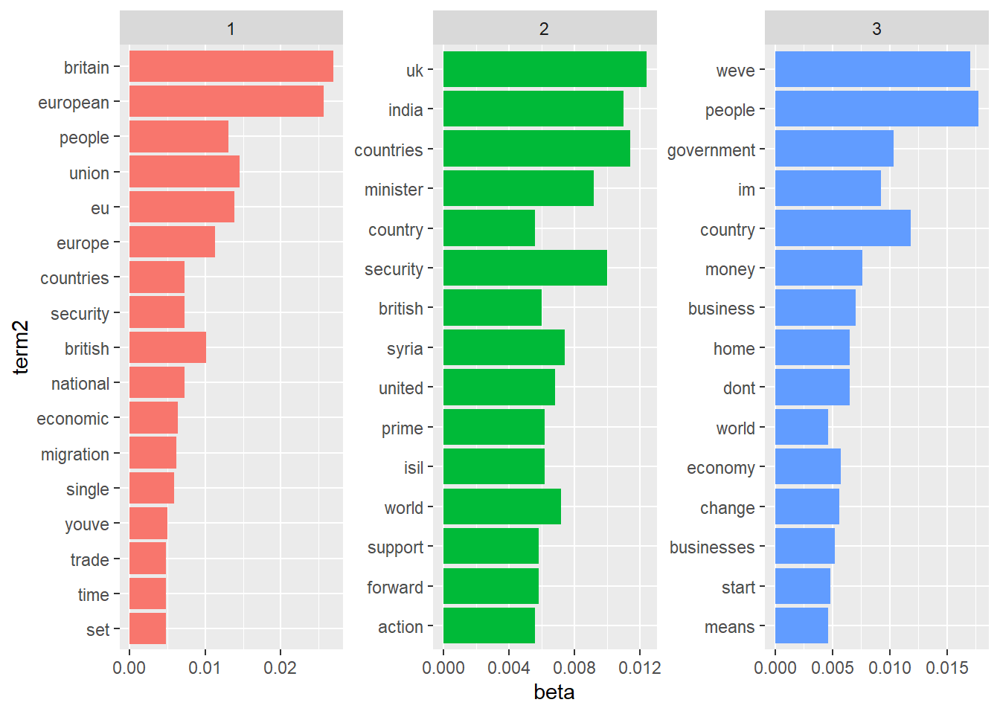
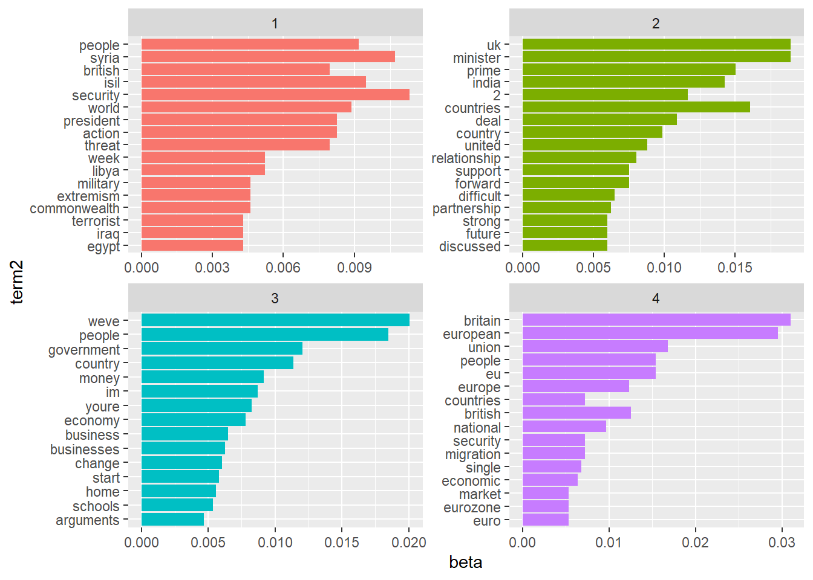

Topic modeling is an unsupervised machine learning technique that’s capable of scanning a set of documents, detecting word and phrase patterns within them, and automatically clustering word groups and similar expressions that best characterize a set of documents.
Some more natural language processing (NLP) vocabulary:
# Install new package
install.packages("topicmodels")# Load needed packages
library(tidyverse)
library(tidytext)
library(topicmodels)# Read csv file and store it in a new variable called data
data <- read.csv("speeches_uk.csv")# We only focus on speeches in nov and dec 2015
speech_subset <- data %>%
mutate(date = as.Date(date,"%d-%m-%Y")) %>%
filter(date > "2015-11-01" & date < "2015-12-31")# Do cleaning tasks
clean_data <- speech_subset %>%
mutate(country = as.factor(country)) %>% #convert country to factor
mutate(speaker = as.factor(speaker)) %>% #convert speaker to factor
mutate(text = str_replace_all(text,"<.*?>",""))%>% #remove all html tags
mutate(text = str_replace_all(text,"[^a-zA-Z0-9 -]",""))%>% #remove all non-alphanumeric characters
mutate(text = str_trim(text)) %>% #trim excess white spaces
mutate(text = tolower(text)) #covert all to lower case# Tokenize Clean data and remove stopwords
data("stop_words")
clean_tokenized_data <- clean_data %>%
unnest_tokens(word,text)%>%
anti_join(stop_words)## Joining, by = "word"A DTM is a table that describes the frequency of terms that occur in a collection of documents. Typically, DTMs are sparse matrices.
In a document-term matrix, rows correspond to documents in the collection and columns correspond to terms.
Document-Term Matrix DTM
# Make DTM
data_dtm <- clean_tokenized_data %>%
count(word,X) %>%
cast_dtm(X, word, n) # Take a look at the DTM matrix
data_dtm_mx <- as.matrix(data_dtm)
data_dtm_mx[1:4, 200:204]## Terms
## Docs advocate advocates advocatewhat advocating aeroplane
## 10 0 0 0 0 0
## 11 1 0 1 1 0
## 14 0 0 0 0 0
## 13 0 0 0 0 0# Use LDA function from topicmodels library
lda_out <- LDA(
data_dtm,
k = 2, #how many topics do you want to extract
method = "Gibbs",
control = list(seed = 42)
)# Take a look at the output
glimpse(lda_out)## Formal class 'LDA_Gibbs' [package "topicmodels"] with 16 slots
## ..@ seedwords : NULL
## ..@ z : int [1:14724] 1 1 1 1 2 2 1 2 1 1 ...
## ..@ alpha : num 25
## ..@ call : language LDA(x = data_dtm, k = 2, method = "Gibbs", control = list(seed = 42))
## ..@ Dim : int [1:2] 15 4489
## ..@ control :Formal class 'LDA_Gibbscontrol' [package "topicmodels"] with 14 slots
## ..@ k : int 2
## ..@ terms : chr [1:4489] "07" "1" "10" "100" ...
## ..@ documents : chr [1:15] "10" "11" "14" "13" ...
## ..@ beta : num [1:2, 1:4489] -7.68 -11.4 -6.6 -11.4 -6.6 ...
## ..@ gamma : num [1:15, 1:2] 0.716 0.227 0.164 0.767 0.564 ...
## ..@ wordassignments:List of 5
## .. ..$ i : int [1:8121] 1 1 1 1 1 1 1 1 1 1 ...
## .. ..$ j : int [1:8121] 1 28 30 36 92 100 108 113 145 156 ...
## .. ..$ v : num [1:8121] 1 1 1 2 2 1 2 1 1 1 ...
## .. ..$ nrow: int 15
## .. ..$ ncol: int 4489
## .. ..- attr(*, "class")= chr "simple_triplet_matrix"
## ..@ loglikelihood : num -113969
## ..@ iter : int 2000
## ..@ logLiks : num(0)
## ..@ n : int 14724# Show topics and corresponding words in a tidy way
lda_topics <- lda_out %>%
tidy(matrix = "beta") %>%
arrange(desc(beta))# Take the top 15 most frequent words in each topic
word_probs <- lda_topics %>%
group_by(topic) %>%
top_n(15, beta) %>%
ungroup() %>%
mutate(term2 = fct_reorder(term, beta))# Plot the output
ggplot( word_probs, aes( term2, beta, fill = as.factor(topic) ) ) +
geom_col(show.legend =FALSE) +
facet_wrap(~ topic, scales ="free") +
coord_flip()# Running a 3 topic model
lda_topics2 <- LDA(
data_dtm,
k = 3,
method = "Gibbs",
control = list(seed = 42)) %>%
tidy(matrix = "beta")# Take the top 15 most frequent words in each topic
word_probs2 <- lda_topics2 %>%
group_by(topic) %>%
top_n(15, beta) %>%
ungroup() %>%
mutate(term2 = fct_reorder(term, beta))# Plot the output
ggplot( word_probs2, aes( term2, beta, fill = as.factor(topic) ) ) +
geom_col(show.legend =FALSE) +
facet_wrap(~ topic, scales = "free") +
coord_flip()
# Running a 4 topic model
lda_topics3 <- LDA(
data_dtm,
k = 4,
method = "Gibbs",
control = list(seed = 42)) %>%
tidy(matrix = "beta")# Take the top 15 most frequent words in each topic
word_probs3 <- lda_topics3 %>%
group_by(topic) %>%
top_n(15, beta) %>%
ungroup() %>%
mutate(term2 = fct_reorder(term, beta))# Plot the output
ggplot(word_probs3, aes(term2, beta, fill = as.factor(topic) ) ) +
geom_col(show.legend =FALSE) +
facet_wrap(~ topic, scales = "free") +
coord_flip()